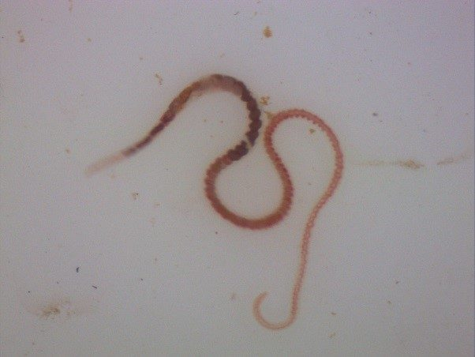

हॉफमीस्टर्स स्लज वर्मHoffmeister's Sludge Worm
Limnodrilus hoffmeisteri · Naididae · SFL-0018

- Scientific name वैज्ञानिक नाम
- Limnodrilus hoffmeisteri Claparède, 1862
- Family कुल
- Naididae
- Hindi हिंदी
- हॉफमीस्टर्स स्लज वर्म
- Local names स्थानीय नाम
- hoffmeisters sludge worm, lal keechad kida, limnodrilus hoffmeisteri, sludge worm, nali kida
- Status here यहाँ की स्थिति
- native
- Movement आवागमन
- Resident, here all year
- Known from कहाँ दर्ज
- Others have published records from the wider Awadh–Purvanchal plain, none yet from Basti–Ayodhya अवध–पूर्वांचल से दूसरों के प्रकाशित अभिलेख, बस्ती–अयोध्या से अभी नहीं
- IUCN IUCN
- not evaluated
- Review समीक्षा
- not yet reviewed
When to look कब देखें
Present all year. साल भर मौजूद।
Tell it apart from इनसे अलग पहचानें
हॉफमीस्टर्स स्लज वर्म / Hoffmeister's Sludge Worm
Limnodrilus hoffmeisteri Claparède, 1862 — Naididae
हॉफमीस्टर्स स्लज वर्म — गंदी नालियों, सीवेज और ठहरे हुए तालाबों के कीचड़ में लाखों की संख्या में पाया जाने वाला एक लाल रंग का पतला जलीय कीड़ा। इसे स्थानीय रूप से 'नाली का लाल कीड़ा' भी कहते हैं। यह बिना ऑक्सीजन वाले सड़े कीचड़ में भी आसानी से जिंदा रहता है। इसका अगला हिस्सा कीचड़ में दबा रहता है और पूंछ पानी में तेजी से लहराती है।
Quick Identification त्वरित पहचान
| Feature | Description |
|---|---|
| Habit | Slender, thread-like, reddish aquatic worm forming dense colonies in organic sludge |
| Coloration | Pinkish-red to bright blood-red due to high concentrations of dissolved haemoglobin |
| Setae | All setae bifid crotchets with upper teeth equal to or slightly longer than lower |
| Gills | Completely lacking external branchial gills on posterior segments |
| Penis Sheath | Chitinous penis sheath elongate, cylindrical, ending in a characteristic reflexed bonnet |
Field tip: Look in slow-moving organically contaminated drains or village wastewater outlets where muddy edges appear covered by a trembling reddish carpet that vanishes when tapped.
हिंदी — कैसे पहचानें: गंदे पानी की नालियों में लाल धागे जैसे कीड़ों की कांपती हुई चटाई, छूने पर तुरंत कीचड़ में गायब हो जाना, और शरीर पर कोई गलफड़े न होना।
Morphology आकारिकी
Adult description: Slender, thread-like aquatic tubificid worm. Body composed of 50 to 95 segments, cylindrical, tapering slightly towards both ends. Coloration pale pink to vivid blood-red, varying with the degree of haemoglobin oxygenation. Prostomium short, rounded or conical. Setae present in four bundles per segment; all setae are bifid crotchets, numbering three to eight per bundle anteriorly, reducing to two to four posteriorly; hair setae entirely absent. Posterior segments completely smooth, devoid of external gills. Most definitive taxonomic character is the male reproductive chitinous penis sheath in segment 10: cylindrical, straight or slightly curved, 10 to 14 times as long as broad at base, terminating in an asymmetric, flared, plate-like bonnet or hood.
हिंदी: यह एक पतला लाल जलीय कीड़ा है।
Behaviour & Ecology व्यवहार और पारिस्थितिकी
- Undulatory Tail Motion: The anterior half remains anchored in an individual mud tube while the posterior tail waves vigorously in open water to harvest oxygen.
- Extreme Anoxia Tolerance: Thrives in anoxic sediments through high-affinity haemoglobin and anaerobic metabolic pathways that produce acetate and propionate.
- Synchronized Retraction: Colony members perceive acoustic vibrations through the water and retract into the sediment simultaneously within a fraction of a second.
- Sludge Ingestion: Continuously swallows anaerobic sewage mud, deriving nutrition from dense colonies of heterotrophic bacteria.
हिंदी: यह सिर कीचड़ में गड़ाकर पूंछ को तेजी से पानी में हिलाता है। आहट मिलते ही हजारों कीड़े एक साथ कीचड़ में छिप जाते हैं।
Life Cycle / Phenology जीवन चक्र
- Continuous Breeding: In warm tropical effluent waters, breeding occurs throughout all twelve months of the year.
- Cocoon Deposition: Lays transparent chitinous cocoons containing two to ten eggs directly into the mud.
- Direct Development: Embryos develop without a free-swimming larval stage, emerging as miniature worms within two weeks.
- Population Explosions: High organic nutrient loads allow populations to reach hundreds of thousands of individuals per square metre.
हिंदी: गंदे पानी में यह पूरे साल तेजी से अंडे देता है और कुछ ही हफ्तों में इसकी आबादी लाखों में पहुंच जाती है।
Host Plants or Prey आहार
- Sewage Bacteria: Feeds heavily on bacteria flourishing on domestic waste and sewage particles.
- Fine Organic Sludge: Decomposing vegetable matter, cattle manure runoff, and decaying leaves of peepal.
- Microbial Biofilms: Ingests organic surface films on mineral silt grains.
हिंदी: यह सीवेज, सड़ी हुई पत्तियों और कीचड़ में मौजूद बैक्टीरिया को खाकर जिंदा रहता है।
Predators / Natural Enemies शत्रु
- Fishes: Bottom-feeding catfishes, tilapia, and carps consume dense colonies in drainage outlets.
- Waterbirds: Pond herons, egrets, and ducks feed on sludge worms, while common mynas probe exposed muddy banks.
- Aquatic Insects: Predatory dytiscid diving beetle larvae and leeches prey upon worms in ditches.
हिंदी: मछलियां, बगुले, मैना और पानी के शिकारी कीड़े इन्हें बहुत तेजी से पकड़कर खाते हैं।
Agricultural / Human Relevance कृषि प्रासंगिकता
- Aquarium Fish Food: Harvested commercially as 'Tubifex worms' to feed ornamental fishes in home aquariums.
- Sewage Pollution Bioindicator: Universal biological indicator of severe organic pollution and low dissolved oxygen in aquatic habitats.
- Sludge Digestion: Plays a massive ecological role in digesting and mineralizing tons of urban organic sludge in rural drains.
हिंदी: इसे एक्वेरियम की मछलियों के भोजन के रूप में बेचा जाता है। यह अत्यधिक प्रदूषित और गंदे पानी की पहचान कराता है।
Expected Locally स्थानीय रूप से अपेक्षित
Not a field record. Written from published accounts for eastern Uttar Pradesh. No confirmed local sighting yet — if you have seen it, that is what the atlas needs.
अभी तक स्थानीय पुष्टि नहीं। यह विवरण प्रकाशित स्रोतों से है, किसी अवलोकन से नहीं।
Expected in soft benthic sediments of perennial ponds, oxbow lakes, slow canals, and river margins across Basti, Ayodhya, and neighbouring Awadh districts. GBIF holds published records from the wider Awadh–Purvanchal plain, none yet from Basti–Ayodhya. To confirm this species for the Atlas, provide a clear photograph showing habit and characteristic waving colonies, along with date, time, and specific location.
Distribution वितरण
Global range: A true cosmopolitan aquatic oligochaete found in freshwater habitats on every continent except Antarctica.
In India: Abundant across every state in organically polluted rivers, village drains, and stagnant wetlands.
In Uttar Pradesh: Documented extensively from polluted drains and riverbeds in Kanpur, Lucknow, Varanasi, and Ayodhya.
In Basti district / eastern UP: Ubiquitous in village wastewater drains, stagnant roadside ditches, and pond edges throughout Basti.
हिंदी: यह कीड़ा पूरी दुनिया के गंदे पानी में पाया जाता है। उत्तर प्रदेश की हर नाली और तालाब के कीचड़ में यह मौजूद है।
Research Questions शोध प्रश्न
- What is the density of Limnodrilus hoffmeisteri in wastewater drains entering the Kuwana river in Basti? / बस्ती में कुवाना नदी में गिरने वाली नालियों में इस कीड़े की प्रति वर्ग मीटर कितनी संख्या है?
- How does anaerobic metabolism shift during prolonged seasonal low-water stagnation in summer? / गर्मियों में पानी सूखने पर यह बिना ऑक्सीजन के किस प्रकार जीवित रहता है?
- What is the risk of transmitting fish parasites through unsterilized live harvested sludge worms? / नालियों से निकाले गए कीड़ों को मछलियों को खिलाने से बीमारियों का कितना खतरा होता है?
- How rapidly does a colony recover following heavy monsoon flood flushing of drain sediment? / बरसात में नाली बह जाने के बाद इसकी आबादी कितनी तेजी से दोबारा पनपती है?
- Can local populations be cultivated on agricultural dairy sludge for sustainable poultry feed protein? / क्या मुर्गी पालन के लिए प्रोटीन जुटाने हेतु इसे डेयरी कचरे पर पाला जा सकता है?
Similar Species मिलती-जुलती प्रजातियाँ
| Species | How to tell apart | हिंदी |
|---|---|---|
| Tubifex tubifex | Possesses dorsal hair setae in anterior bundles; penis sheath thin, tub-shaped | आगे के खंडों में बालों जैसे कांटे, अलग प्रकार का अंग |
| Branchiura sowerbyi | Substantially larger; bears conspicuous paired branchial gills along posterior tail | काफी बड़ा आकार, पूंछ पर उंगली जैसे गलफड़े |
| Aulodrilus pigueti | Much smaller; constructs elevated chimney tubes of mud on pond beds | काफी छोटा, मिट्टी की ऊंची चिमनी बनाना |
Field rule: A slender reddish-pink worm forming trembling carpets in polluted organic sludge, lacking hair setae and external gills, with a bonnet-tipped penis sheath identifies Limnodrilus hoffmeisteri.
Taxonomy & Classification वर्गीकरण
Original description. Described by Édouard René Claparède in 1862 as Limnodrilus hoffmeisteri in Mémoires de la Société de Physique et d'Histoire Naturelle de Genève, 16, pp. 217–291.
Subspecies. Monotypic; placed in the subfamily Tubificinae within the family Naididae.
Family and order placement. Placed in the family Naididae (formerly Tubificidae), order Tubificida, class Clitellata.
IUCN status rationale. Not evaluated by the IUCN; ubiquitous globally and exceedingly abundant in anthropogenic aquatic habitats.
हिंदी: एडुआर्ड रेने क्लैपारेड ने 1862 में इसका वैज्ञानिक विवरण दिया था। यह नाइडिडी कुल का सदस्य है।
Photo Gallery फोटो गैलरी
No photos yet — add field photos to media/species/hoffmeisters_sludge_worm/ and run node scripts/sync_photos.js.
Photos needed आवश्यक फोटो
- [ ] Trembling colony of red worms waving above dark organic sludge (काले कीचड़ के ऊपर कांपती हुई लाल कीड़ों की कॉलोनी)
- [ ] Individual worm removed into clear water showing blood-red colour (साफ पानी में रखा गया गहरा लाल कीड़ा)
- [ ] High-power micrograph of the characteristic bonnet-headed penis sheath (विशिष्ट हुड वाले अंग का सूक्ष्मदर्शी चित्र)
References संदर्भ
- Claparède, É.R. (1862). Recherches anatomiques sur les Oligochètes. Mémoires de la Société de Physique et d'Histoire Naturelle de Genève, 16, pp. 217–291.
- Brinkhurst, R.O. & Jamieson, B.G.M. (1971). Aquatic Oligochaeta of the World. University of Toronto Press, Toronto.
- Timm, T. (2009). A guide to the freshwater Oligochaeta and Acanthobdellida of northern and central Europe. Lauterbornia, 66, p. 112.
- Kathman, R.D. & Brinkhurst, R.O. (1998). Guide to the Freshwater Oligochaetes of North America. Aquatic Resources Center, College Grove.
- GBIF Occurrence Data — Limnodrilus hoffmeisteri Claparède, 1862, India (2025).
Source file: species/fauna/soil_fauna/hoffmeisters_sludge_worm.md